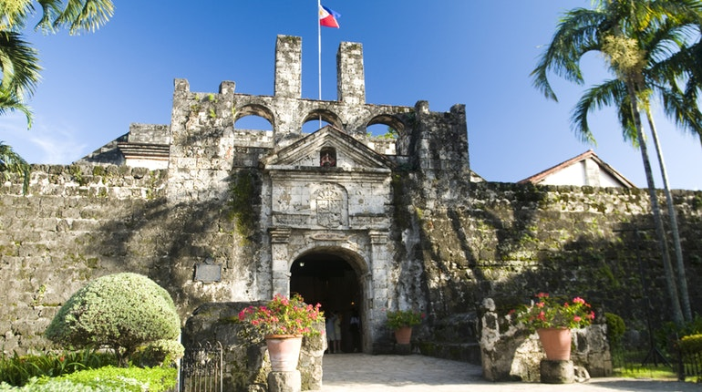
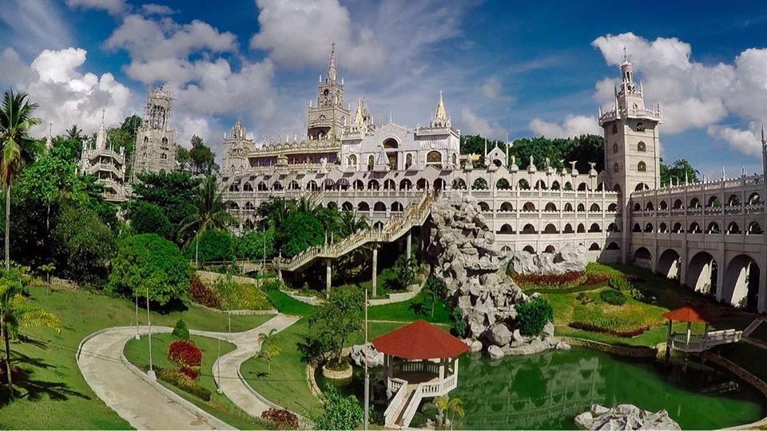

FORT SAN PEDRO
Fuerte de San Pedro is a military defense structure in Cebu (Philippines), built by the Spanish under the command of Miguel López de Legazpi, first governor of the Captaincy General of the Philippines. It is located in the area now called Plaza Indepedencia, in the pier area of the city. The original fort was made of wood and built after the arrival of Legazpi and his expedition. In the early 17th century a stone fort was built to repel Muslim raiders. Today's structure dates from 1738 and is the oldest triangular bastion fort in the country. It served as the nucleus of the first Spanish settlement in the Philippines. During the Philippine Revolution at the end of the 19th century, it was attacked and taken by Filipino revolutionaries, who used it as a stronghold.

HERITAGE OF CEBU MONUMENT
The Heritage of Cebu Monument is a tableau of sculptures made of concrete, bronze, brass and steel showing scenes about events and structures related to the history of Cebu. The construction of the monument began in July 1997 and it was finished in December 2000.
Local artist Eduardo Castrillo built the sculptures of the Cebu Heritage Monument. He and the late Senator Marcelo Fernan together with donations from other private individuals and organizations funded the construction of the monument.
The structures depicted in the Heritage Monument are the Basilica del Santo Niño, the Cebu Metropolitan Cathedral, the Saint John the Baptist Church, the Magellan’s Cross, and a Spanish Galleon.
The scenes depicted in the Heritage Monument are the baptism of Rajah Humabon, a procession of the Santo Niño, a Roman Catholic mass, and the Battle of Mactan between Lapu-Lapu and Ferdinand Magellan. The persons depicted in the monument include the late president Sergio Osmena Sr. and Blessed Pedro Calungsod.
The Heritage Monument is located in the historic Parian District, which during the Spanish period was home to the residences of the most prominent families in Cebu at that time. The St. John the Baptist Church previously stood on the site of the monument’s location. However, the diocese of Cebu demolished the church in 1875.
You can also visit the other nearby historical spots in the Parian District, which are the Casa Gorordo Museum and the Yap-San Diego House.
The Yap-San Diego House is part of the Casa Gorordo Museum complex, which is a private museum open to the public. The museum complex highlights the lifestyle of a rich household in Cebu during the Spanish era and displays antique furnishings, clothes, kitchen equipment and utensils, and other antique items.

KAWASAN FALLS
The Kawasan Falls, a three-layered waterfall, is one of the popular tourist destinations in the province. Canyoning tours are offered upstream of the Kawasan Falls, where the Matutinao river flows through a secluded canyon. There is also the Badian mountain range and the popular trekking destination of Osmeña Peak.
The town's jurisdiction includes Zaragosa or Badian Island, where there is a white sandy private beach and which from there snorkeling and diving activities can be arranged. Nearby Pescador Island, Moalboal offers corals and marine life for divers.

OSLOB WHALE SHARK WATCHING
Oslob, Cebu is a small coastal town with a population of 30,000 people. It is a hub of activity with several tourist attractions to offer to the hoards of visitors who stop by. It is most well known for being one of the best spots to swim with whale sharks. However, there are also several other attractions to check out in Oslob.

SIMALA CHURCH
Simala Shrine Church is a religious structure and establishment located in Sibonga Town, Southern Cebu.
Cebu Province is where Catholicism was first sowed and churches established by European missionaries (Spanish) in the 16th century.
Certainly, the Christian faith that was brought in this beautiful province spread throughout the country as the missionaries and faithful locals move and live around various places.
Simala Shrine Church then is just one of those religious places, if not the most popular nowadays, where most believers (Catholics) come for various reasons.
Pilgrimages or visiting religious places is one of the most important aspects that most Filipino Catholics have. This aspect keeps their faith alive and keeps them going despite all the challenges in life.

SIRAO FLOWER GARDEN
In Cebu, Philippines, a so-called “Mini Amsterdam” is attracting tourists from all over the country and even foreigners. It is the famous “Sirao Flower Farm” located in a mountain barangay just few minutes from JY, Lahug, Cebu City.
It all started when a couple planted flowering plants to be harvested and sold on All Soul’s Day. They then noticed that their garden is attracting visitors so they decided not to cut them at all. The incursion of tourists encouraged them to plant more. The more plants and flowers in the garden meant more visitors too. Since tulips and hyacinths are hard to grow in a hot climate, celosia flowers are grown in Sirao Flower Farm instead. These flowers are as colorful and attractive as the tulips.
Celosia is the main flower grown in Sirao Flower Farm. This flower is considered to be a genus of edible and ornamental plants of the Amaranth family, Amaranthaceae. Its name was derived from the Ancient Greek word “kḗleos” which means “burning” and it refers to its flame-like flower heads.
Aside from Celosias, other variety of flowers are grown in the farm. Flowers like sunflower, chrysanthemum, daisy and aster are among the flowers that are planted there. These flowers provide a perfect edge for picture taking.
FANTASTIC ISLAND
Three hours of land trip plus another 15 minutes of boat ride take a traveler from Cebu City to Funtastic Island in the town of Medellin in northern Cebu.
Funtastic Island is part of Gibitngil, an island-barangay gifted with sparkling waters, vast coral reefs, long stretch of sand beaches, a picturesque sand bar and rock formations reminiscent of those in Coron, Palawan.
Aside from the natural sceneries, Funtastic Island also boasts of several activities for the thrill-seekers such as a cliff-to-rock zipline, kayaking and snorkeling.
But the most challenging that the island offers is the 40-foot cliff diving platform, hailed Adventure of the Year for 2014 by ABS-CBN’s local magazine show MagTV.
The attraction, whose development is part of the town’s efforts to step up its tourism initiatives, has been attracting hundreds of local and foreign tourists, making Medellin one of the Department of Tourism’s top 10 most visited municipalities in Central Visayas for two years now.

TAOIST TEMPLE
Cebu Taoist Temple (Chinese: 宿霧定光寶殿) is a Taoist temple located in Beverly Hills Subdivision of Cebu City, Philippines. The temple is built by Cebu's substantial Chinese community in 1972.[1] With an elevation of 300 metres (980 ft) above sea level, the temple is a towering, multi-tiered, multi-hued attraction accessible by three separate winding routes.
Unlike the neighboring Phu Sian Temple,[2] the Taoist temple is open to the worshipers and non-worshipers alike. A ritual among devotees is where one prays to the gods to grant one's wish. The ritual includes washing of hands, going inside the chapel barefoot and dropping two blocks of wood. If the blocks of wood are both face up then one could make a wish. If not then it is not yet the time for one's wish to be granted and one has to come to the temple some other time.
The temple is the center of worship for Taoism, the religion which follows the teachings of the ancient Chinese philosopher, Lao Zi. Another ritual among Taoist devotees, which is done during Wednesdays and Sundays,[3] is the climbing of its 81 steps (representing the 81 chapters of Taoism scriptures) to light joss sticks and have their fortune read by the monks.
Some guide books and travel agencies offer trips to the temple or as a side-trip in a tour around Cebu City. But it is more popular with grade school students.
The entrance to the temple was a replica of the Great Wall of China. The temple includes a chapel, a library, a souvenir shop and a wishing well. The spacious balconies offer a scenic view of the downtown Cebu.
OSMENA PEAK
Osmeña Peak is located in the Municipality of Dalaguete in the province of Cebu. The peak is approximately 1,000 meters above sea level making it the highest peak in the island of Cebu.
The peak is part of the Mantalungon mountain range, which is unique from other mountain ranges in the Philippines because of its multiple jagged hills grouped together that overlook and stretch as far as the Badian shorelines. The highest of these hills is the Osmeña Peak named in honor of the famous Osmeña clan in Cebu.
The visual appearance of the Mantalungon range is almost similar in form to the Chocolate Hills of Bohol but the peaks of the ranges are thinner, sharper-pointed and rocky. Unlike the Chocolate Hills, the peaks of the Mantalungon ranges cluster quite near each other and give the impression of being formed from rocks that have survived through time.
Once you reach the Osmeña Peak, you get a 360-degree view of that includes the southwestern coastline of Cebu, and you even see the province of Negros Oriental. However, the peak area is fenced and under private ownership. A lot keeper collects at least 20 pesos from each climber that enters the area and there is a campsite a few meters down the peak. The campsite has a toilet and a bunkhouse available to the public for a fee.
Osmeña Peak and the Mantalungon range are accessible to hikers and mountaineers all year round but it is best to climb the peak in the first half of the year since the rainy season is from June to October. The peak and mountain ranges become wet and slippery during the rainy season.